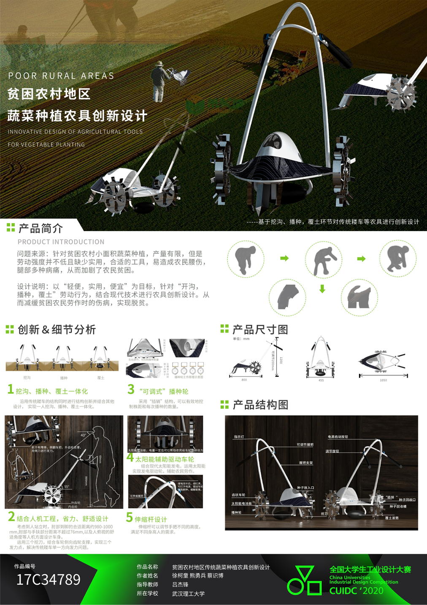
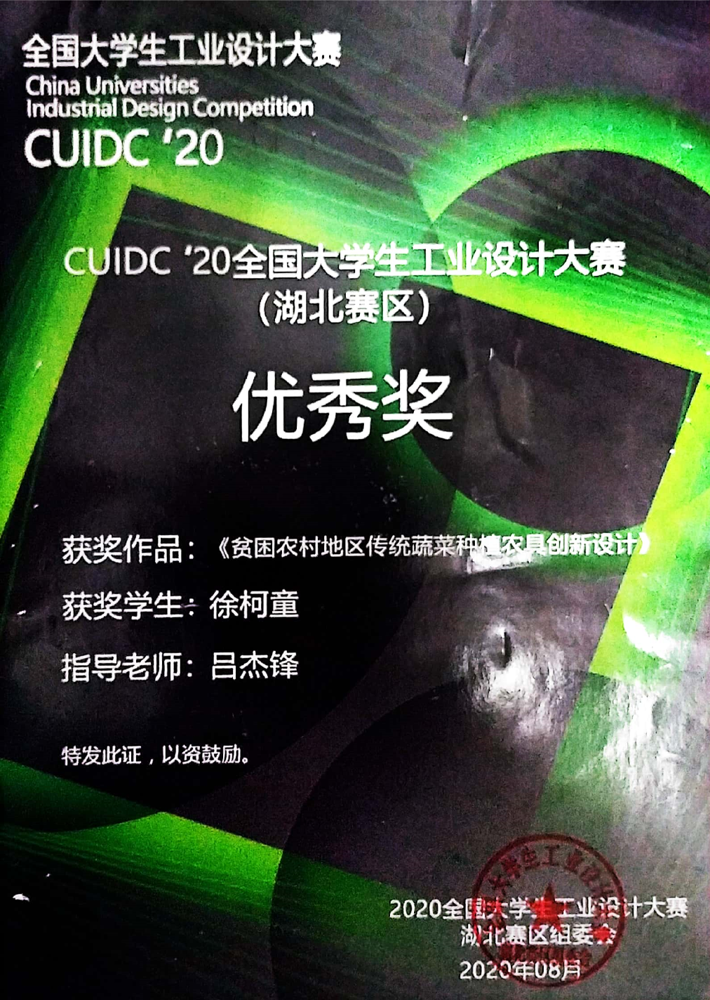

Aiming at the problem of limited output of vegetable cultivation in small areas in poor rural areas, but the labor intensity is not low and there is a lack of practical and suitable tools, which is easy to cause farmers' waist injuries and various leg pains, thus aggravating farmers' poverty.
With the goal of "light, practical and cheap", aiming at the labor behavior of "ditching, sowing, and covering the soil", the innovative design of agricultural tools is combined with modern technology. In this way, the injuries and diseases of poor farmers during work can be alleviated and poverty alleviation can be achieved.
 